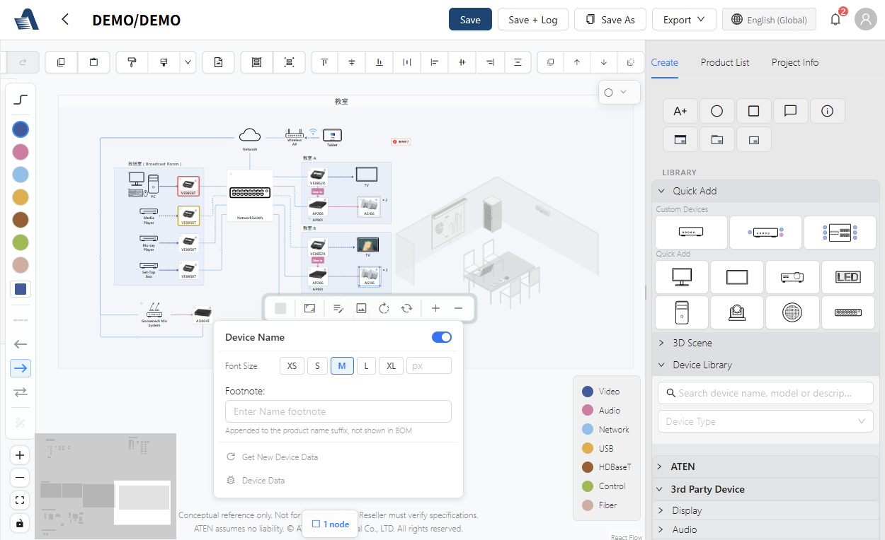
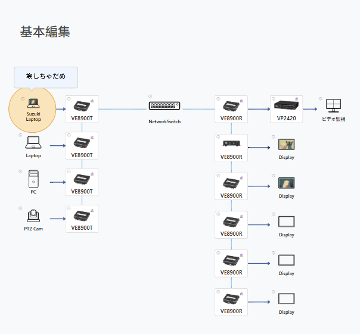
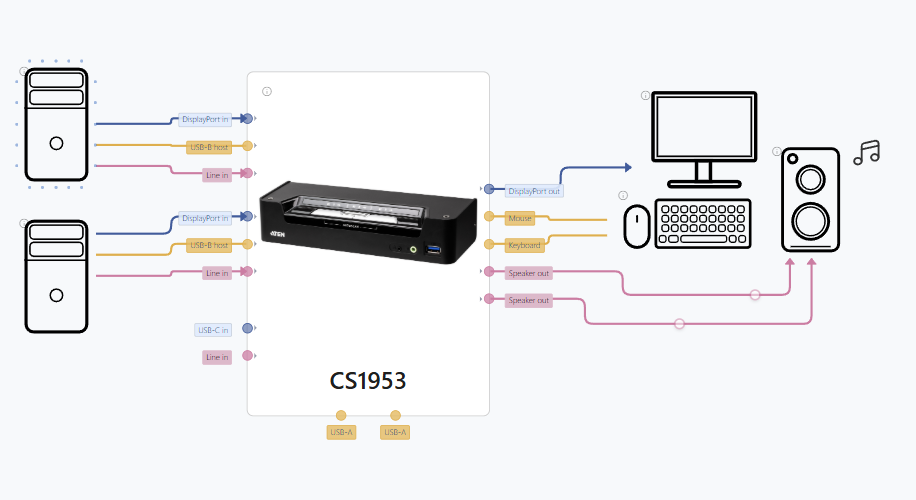
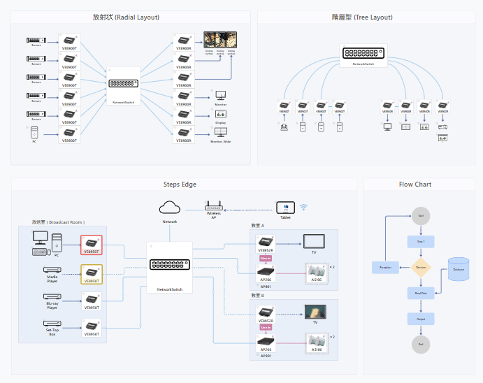
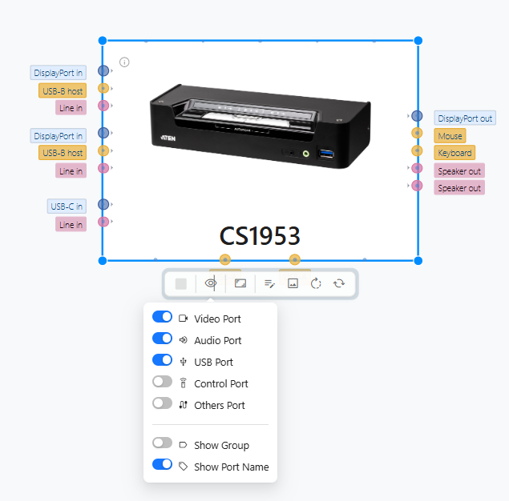
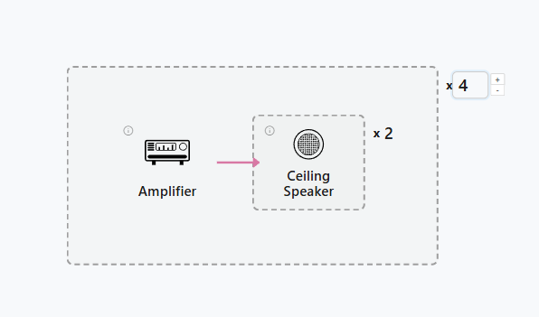
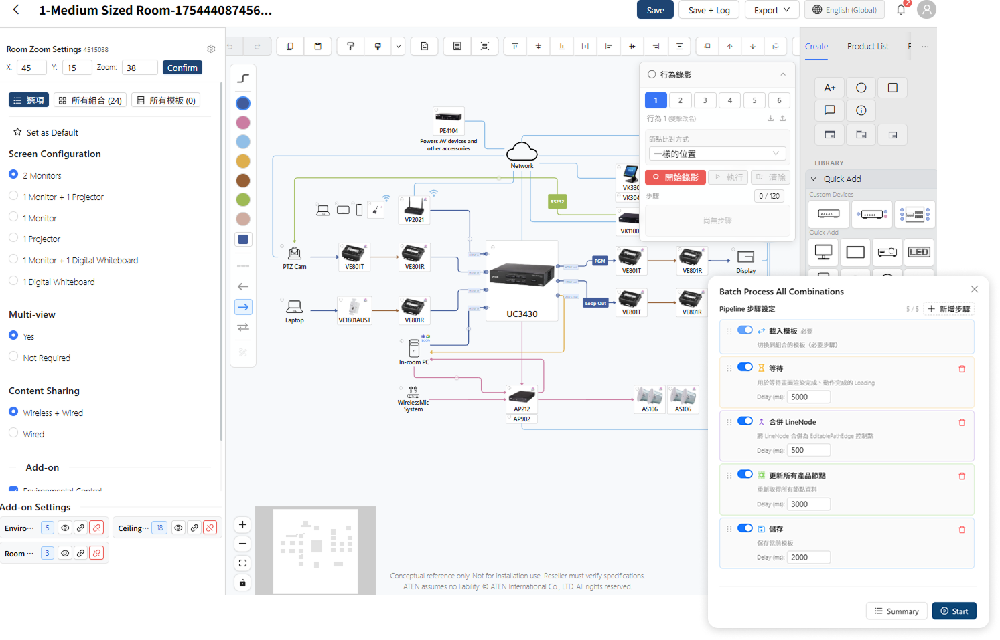
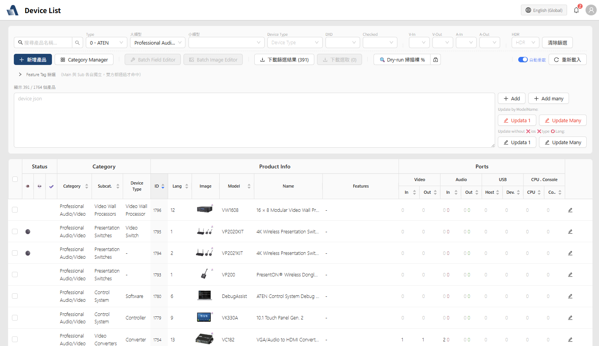

ATEN Solution Builder
2023 – Present
Pro AV proposals, completed on a canvas by System Integrators (SI):
from spec sheets and Excel to
visual wiring diagrams and one-click delivery
Solution Builder is a B2B visual proposal tool: SIs drag and drop devices onto a canvas and draw
connections, while the system validates signal compatibility in real time, computes the Bill of
Materials (BOM), and exports client-ready documents in one click.
It's also the vehicle that operationalizes the company's strategic shift from
"product selling" to "solution selling."
I owned product definition, UX/UI design, front-end development, and the data-analytics
architecture—
the full loop from receiving research insights, to defining the solution, to building it myself, to
validating with data.
My role
Product definition · UX/UI design · Front-end development (React) · Data-analytics architecture
User interviews were run by a researcher; I took the insights and converged them
into solutions.
Project type
B2B SaaS · Visual editor · Enterprise digital transformation

Three-part series: This piece focuses on the Solution Builder product itself (strategy, design, front-end engineering, and data validation). The other two are standalone technical projects that support it: Structuring product data with an LLM and AI Agent: constraining the uncertainty of LLMs.
End-to-end contributions across three layers—from strategy translation, to product implementation, to a closed data loop.
From a business challenge to a design problem
Business context
ATEN is a global Pro AV / KVM manufacturer with a product line spanning thousands of SKUs. A traditional SI's proposal process runs through five stages:
For a junior SI it's a long learning curve; for a senior SI it's a lot of repetitive labor.
At the same time, a sales model long dependent on distributors made it hard for the company to grasp
what
end customers actually needed. The strategy therefore focused on two directions:
Deepen market insight
Build the ability to grasp market demand and the real situations of end users directly, so product decisions stay closer to actual use.
Empower partners to grow
Give entry-level SIs a fast starting point for building solutions and shorten the learning curve; at the same time, let senior SIs explore and apply ATEN's vast product line more efficiently, accelerating deal generation.
The UX strategic question
"How do we lower the barrier to proposing, while raising win rate and traceability?"
Solution Builder is the answer to that question. In design, I restructured the researcher's insights
into
three different demand curves across user types. External users sit on a spectrum:
from end users and junior SIs still learning the product line, to long-term distributors and senior
partner SIs—the same SI needs different tiers of tooling in year one versus year five. Internal sales
sit at the exit of that spectrum, turning external users' actions into trackable opportunities.
So rather than building three separate UIs, I built one tool with switchable tiers,
paired with an internal opportunity-tracking and user-management back office.
End users & junior SIs
Core pain point
No starting point of site-domain knowledge—unsure what such a space can achieve or which products to use. A blank canvas is a burden to them, not freedom.
Strategy: templates first, canvas second
2,000+ modular templates browsable without login first answer "what can this kind of site become, and which ATEN solutions fit," then let them learn by modifying ready-made solutions. For end users and SIs alike, this builds confidence in ATEN's solution capabilities and trust in the brand.
Distributors & long-term partner SIs
Core pain point
The bottleneck isn't knowledge—it's verification efficiency. Huge amounts of time go into checking spec sheets for compatibility and assembling delivery documents.
Strategy: instant feedback × errors as opportunities
Give them the full toolset from design to verification to delivery: compatibility checked the instant a cable is drawn on a free canvas, BOM and documents exported in one click, quickly assembling solutions built around ATEN products. On an incompatibility it doesn't just warn—it suggests a converter that solves the problem, flipping an error from a negative experience into the discovery of a new product.
Internal sales & subsidiary sales
Core pain point
If an external user's action stops at "drawing," sales never see it; opportunities have to be moved into the CRM by hand and are hard to track.
Strategy: user-to-opportunity × tiered management
"Direct inquiry" automatically packages a design into a Salesforce Opportunity and notifies the matching regional sales rep—platform users convert directly into trackable business opportunities. Paired with a tiered user-management back office (Admin / RBU / Area / Sales), each region and subsidiary manages the users and groups under it.
Before the first line of code, split the system into three layers
From the start we could anticipate many derivative scenarios: product selector, free canvas, AI product
search, wiring-diagram generator, room-audio generator, an external API…… If each were built
independently, a small team couldn't sustain it.
So before any work began, the system was cut into three layers, so new scenarios land by
assembling existing capabilities rather than rebuilding.
This foundation also solves two problems on different timelines: after launch, most feedback from
customers and stakeholders lands in the application layer and can be adjusted promptly without touching
the lower layers; early on, while the data layer was still being assembled, the engine and application
layers were developed on a small sample dataset—both progressing in parallel, never blocked by data that
wasn't ready yet.
Core principle: lower layers don't know who's above them; upper layers consume lower layers only through standard interfaces. Every cross-layer interface (Schema, Hook API, JSON format) is a decision that touches design, engineering, and business at once— for example, the Schema is designed with Handle rendering in mind, and Hooks are designed with the shared needs of the product selector and the canvas in mind.
The leverage of layering
The application layer can grow new features as business needs arise—the engine and data layers stay put, and new scenarios are assembled.
Already shipped
Scenario selector, AI product-solution selector, wiring-diagram editor—each consumes the same engine and data layers, writing only its own flow and UI. For example, the AI product-solution selector: the data-layer Schema feeds the LLM directly, and the application layer only adds an agent prompt and a recommendation UI.
In active development
Wiring-diagram generator, modular product-bundle tool, room-audio generator, and more—the engine already has the "consume JSON, produce a diagram" capability, so new applications are likewise just assembled in the application layer without touching the layers below.
External API: already used across departments
Communication between the application and engine layers was defined as JSON from the start, and the Schema is already a stable contract—the FAE team's AI support assistant now uses this API directly, so the dividend of layering reaches beyond the team and across departments.
Core features and design decisions
Feature 1: Visual wiring-diagram editor
The product's core canvas
Three-column layout: device library on the left (search + categories + drag), a React Flow canvas in the center, properties panel on the right. The top toolbar carries only four buttons—Undo / Redo / Save / Export—with advanced features tucked into the right-click menu; a signal color-code legend is pinned to the bottom-right so newcomers can read a diagram without memorizing the rules.

Custom nodes and dynamic ports
React Flow's default nodes can't carry Pro AV semantics—a single Matrix Switcher can have 30+ I/O. Each node's ports (Handles) are generated dynamically from the Schema in productDatabase.json, carrying attributes like signal type, bandwidth, and resolution for use in compatibility checks when connecting. Ports are grouped by Video / Audio / USB / Control / Network, so finding an "HDMI output" only means looking at the Video group.

Users can also create a Custom Device to draw third-party equipment into a design—these models are logged in the back office and become material for R&D to understand market gaps (see Impact). A 3D perspective-style node is also available for client-presentation scenarios.
Signal color coding and connections
Connections automatically apply a seven-color code by signal type (reusing the company's existing signal-color standard; this project's job was to enforce it across Handles, connections, BOM, and the Legend). Three edge styles—Bezier / Step / Straight—match different topologies; when same-color connections cross, a semicircular hop symbol is rendered automatically so complex topologies don't tangle.

Layered complexity: opt-in depth, not forced exposure
Device specs carry a huge amount of information, so the design uses progressive disclosure: by default you see only the device icon (L0), hover reveals the Handles (L1), clicking "show ports" expands the full set of ports (L2), opening a modal shows the full spec (L3), and only when needed do you reach the manufacturer's datasheet (L4). Port Visibility is granular down to "video ports on, audio ports off," so an expert can see only the signals relevant to the task at hand.

Frame and Group ×N: organizing large designs
When a design scales from "one meeting room" to "twelve classrooms + a server room + a control center," simply piling on nodes makes the view unmanageable. Frame borrows Figma's mental model for spatial zoning; Group ×N lets an SI design a single representative room while the system handles quantity multiplication—an outer ×4 meeting rooms and inner ×2 speakers, and the BOM computes 8 automatically. Design responsibility and quantity responsibility are separated.

Feature 2: Template system
Front-end product selector + back-office self-service authoring
Starting from a template
A newcomer picks an application scenario (meeting room, classroom…), and the system generates a draft already containing recommended devices and default connections—just fine-tune. The product selector isn't a one-off tutorial but a persistent starting point: after a template is generated, every element is editable and can be saved as a custom template; experts use it for fast first drafts too—and "start from blank" is always available for seasoned pros.
The back office that makes 2,000+ templates possible
The template library has accumulated 2,000+ modular templates—a volume no single designer could
sustain.
Content is authored and maintained by product planners through the back office; my job was the
data structures and editing tools that make authoring easy,
so planners without an engineering background can maintain rooms, scenes, and connection settings
without
asking engineering to change code each time.
Template diagram editing reuses the same components as the main editor, so what planners build in the
back office is exactly the same nodes and connections SIs see on the front end.
Beyond authoring, the back office has gradually been equipped with purpose-built tools that raise
operational efficiency—action recording, template/option-combination management, batch processing—
whose design and development keep maintenance and validation costs from spiraling as the template count
keeps growing.

Feature 3: One-click delivery
Automating the last mile of a proposal
Real-time BOM calculation
The product list updates live with the canvas: adding or removing nodes and adjusting Group ×N are reflected instantly, automatically grouped by brand and category, with hidden nodes filtered out. The totals row gives sales a quick rough quote directly.

Excel quote and PDF system diagram
One click exports an Excel quote using the company's official template (with customer info and pricing fields), plus a PDF system wiring diagram complete with cover page, project info, signal legend, and watermark— deliverable to the client as-is, no rework needed. Export uses a pure front-end pipeline (html-to-image + jsPDF) with no back-end dependency.

Crossing the line between design and development
The engineering volume here would normally require several front-end engineers working together. Delivering it with a tiny team came down to the three-layer architecture above, plus bringing AI into the daily development workflow—architecture and UX decisions aligned in a single mind, eliminating the hand-off loss between design and engineering.
Front-end architecture
Deep customization on React 18 + @xyflow/react
React 18 + Vite + React Router, with Ant Design for UI and Tailwind for fine-grained overrides. State management uses no Redux—instead, 17 custom Hooks separated by responsibility (history, grouping, alignment/snapping, Handle management…), each exposing a clear API. The application layer can assemble just a subset—for example, the public browse page loads only Render and Zoom, not the editing-related Hooks.
React Flow customization highlights
Ports aren't hard-coded; they're rendered dynamically from productDatabase.json, which is what makes it possible to support the edge cases experts draw (4K into 1080p, HDMI across HDBaseT).
The moment a cable is drawn, it reads both ports' attributes and validates in real time; on an incompatibility it flags a warning and suggests a converter product. The checking logic is written once, in the engine layer, and shared across every application scenario.
An algorithm that computes the intersections of same-color edges and renders a hop symbol on the upper edge.
Performance and engineering details
Facing thousands of SKUs, the library loads in batched requests in segments; the app is interactive within seconds while the full device library fills in in the background.
Even an unsaved canvas can download a BOM directly—the back end creates a temporary project on the fly, computes, exports, and deletes it, leaving no orphan project in the workspace.
Automatically generates all permutations of a template's options and runs the validation action on each, keeping the maintenance cost of 2,000+ templates manageable.
Back office: the Product Manager
Specs for thousands of SKUs are maintained through structured forms (not free text), with field groups mapping directly to the Schema in productDatabase.json—design and data structure taking shape together. With cross-filtering and batch updates, maintaining product data shifts from "an engineering deliverable" to "sales self-service."

Further reading (each its own piece): The key to the data layer is turning thousands of product specs—scattered across PDF / HTML in inconsistent formats— into standardized JSON using GPT-4o + prompt engineering; see Structuring product data with an LLM. How the application layer's AI Agent puts uncertainty in the right place; see AI Agent: constraining the uncertainty of LLMs.
From internal tool to external service to a closed data loop
Commercial expansion
Solution Builder grew from an internal tool into an official, publicly released SaaS service, adopted by subsidiaries worldwide as a unified tool for training and sales enablement. Login-free template browsing lowers the entry barrier for unfamiliar SIs; after a design is complete, "Direct inquiry" automatically packages the design JSON, BOM, and a canvas screenshot into a Salesforce Opportunity, so sales pick it up with full context already in place.
A "drawing" action on the platform becomes a trackable opportunity in the CRM—no manual data shuffling for sales.

Data architecture: defining the Event Schema at the design stage
Instrumentation isn't bolted on afterward. The design deliverables expanded from wireframes and an interaction spec to three artifacts—adding an Event Spec, where every interactive element is annotated with its corresponding event right in Figma. Events use semantic naming and are layered (business events / interaction events / debug), and always carry context: for example, device_added records where a product was added from (search / template / AI recommendation), so we can answer concrete questions like "were the products the AI suggested actually adopted?"
Data flow: front-end GTM events → GA4 → BigQuery (cross-session analysis, joining CRM data) → PowerBI, split into three dashboards—Marketing, R&D, and UX—for three groups of decision-makers.
Two real closed-loop cases
Add products · use templates · create Custom Devices → Semantic events
GA4 · BigQuery → Insight
Dashboard segmentation → Business / R&D action
Bundles · new-product evaluation
Popular product pairings → bundle marketing
Using BigQuery to find the product pairs that most often appear together in a single design, marketing launched bundled offers based on them and added the combination to the standard recommended configuration in SI training.
Third-party device gaps → R&D evaluation
Tracking Custom Device events revealed that certain types of third-party equipment were being added frequently—and these users' designs already included multiple in-house products, so what was missing wasn't the customer, it was the product. This "gap signal" feeds back to R&D as input for greenlighting new products. User behavior itself becomes continuous market research.
Exact revenue and internal figures are under NDA; this piece discloses only what's public.
Design, engineering, and data aligned in one person
Solution Builder demonstrates a way of working: designing the Schema with how the front end will consume
it in mind,
defining instrumentation as you design interactions, and placing each feature against its position in
the
business funnel.
When UX commands the underlying data and architecture, it can move from a "support function" into
"product decisions"—
the three-layer architecture, compatibility checking, and closed data loop in this project are all
products of that cross-domain integration.
What sustains this way of working is a deep integration of AI tools into the development process: from
the
LLM data pipeline to everyday AI-assisted development,
the pace of product development speeds up while eliminating the back-and-forth between design and
engineering that would otherwise require several developers—
which is how an internal tool could grow, in the hands of a tiny team, into a mature external product
service.